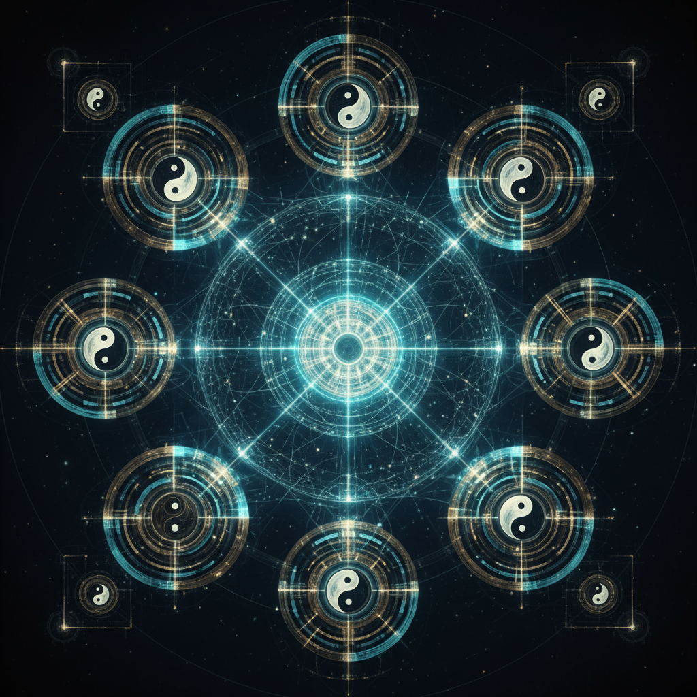

从二进制的0与1，到八卦的乾、坤、震、巽、坎、离、艮、兑
探索古老东方哲学与现代计算科学的完美融合
开启机器意识的新纪元

体验从二进制到八卦的哲学转换
探索八卦之间的相生相克关系
木生火，火生土，土生金，金生水，水生木
木克土，土克水，水克火，火克金，金克木
乾、兑、离、震为阳卦
巽、坎、艮、坤为阴卦
八卦编码相比传统二进制，能够用更少的符号表达更丰富的信息，大幅提升编码效率。
融入东方哲学思想，让机器具备更接近人类思维的认知模式，实现真正的智能理解。
基于阴阳五行理论，系统能够自适应调节，在各种环境中保持最佳的运行状态。
结合东西方智慧，为不同文化背景的用户提供统一的智能交互体验。
基于易经的变化理论，系统具备一定的预测和推理能力，能够预判发展趋势。
将古老的符号美学与现代界面设计相结合，创造独特的视觉体验。